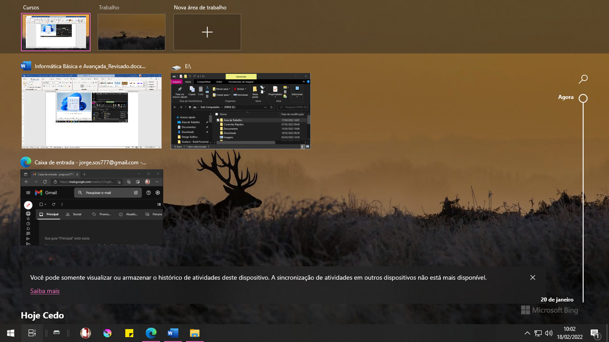
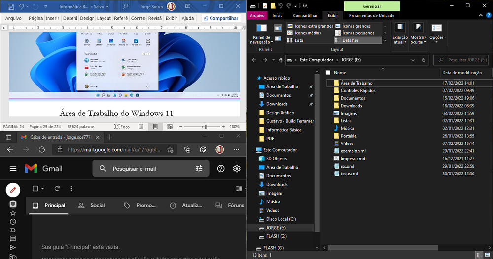

Ao ligarmos um computador, algumas vezes encontraremos uma tela de início ou de boas-vindas, em alguns casos, será solicitado uma senha, caso o usuário a tenha implementado. Passado essa etapa entraremos na Área de Trabalho.
Na Área de Trabalho, encontramos alguns ícones de pastas como Documentos e Imagens, essas pastas, assim como a própria Área de Trabalho estão localizadas realmente na pasta do Usuário, que normalmente fica na unidade C:, a unidade virtual onde o Windows fica instalado.
A Área de Trabalho é o ponto de partida para tudo o que faremos no computador, seja acessar a internet, abrir uma pasta, um aplicativo ou gerenciar nossos arquivos.
O Windows 10 permite múltiplas Áreas de Trabalho, de forma que você pode gerenciar várias estações para um mesmo usuário, por exemplo, em uma, você gerencia suas vendas, com todas as aplicações que necessitar para controle de estoque, fluxo de caixa, finanças etc., em outra você gerencia múltiplas caixas de entrada de e-mail, e chats com os clientes, e assim por diante.
Para gerenciar as áreas de trabalho utilizamos a Visão de Tarefas, que pode ser acessada por seu ícone na Barra de Tarefas, ou pelo atalho ⊞+D.
Você pode criar quantas Áreas de Trabalho forem necessárias e dar um nome para cada uma delas. Na Visão de Tarefas você tem acesso ainda à Linha do Tempo que exibe os arquivos abertos e as aplicações utilizadas recorrentemente.
Desde a versão 1.0 do Windows, já era possível a utilização de várias janelas ao mesmo tempo. O Windows conta com uma forma de organizar as janelas dividindo o espaço da tela de forma a facilitar sua visualização, esse recurso recebeu vários aprimoramentos. A exibição lado-a-lado e em cascata, permite a visualização de janelas umas sobre as outras ou ocupando porções proporcionais da tela. Para utilizar duas janelas lado-a-lado, basta segurar na barra de títulos e arrastar para a extremidade lateral, que o próprio sistema operacional ajustará suas dimensões. Para que uma janela utilize um quarto de tamanho da área visível, basta arrastá-la para um dos cantos.
